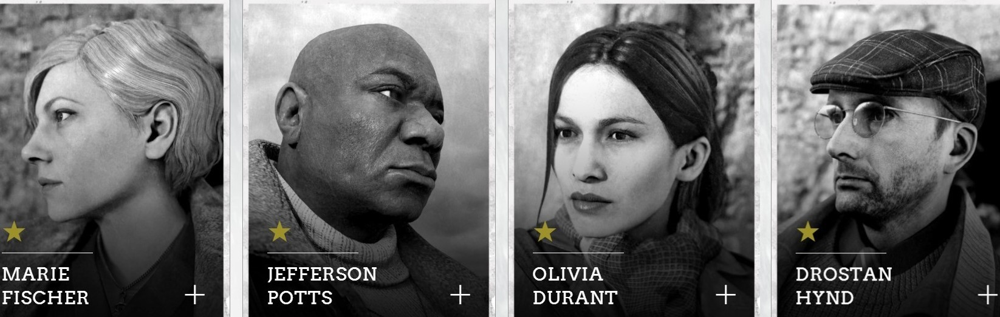

Call of Duty WW2 Zombies is een originele en angstaandjagende nieuwe online modus die een nieuwe horrorverhaal vertellen. Het verhaal speelt zich af in het Duitse drop Mittelberg. Als je bent gestart begint er gelijk een missie waarbij je allerlei soort onderdelen nodig hebt om door te gaan naar de volgende missie. Ook komt de Zombie modus met een nieuwe teovoeging. een klassensysteem waarbij spelers kunnen kiezen voor een van de vier gevechtsrollen. De vier gevechtsrollen zijn: Offense, Control, Medic en Support. Die verschillende in-game-vaardigheden beiden. Zombies gaat oneindig door tot dat je het niet meer overleeft. Er zijn "waves" waarin een aantal zombies tevoorschijn komen. hoe hoger de wave hoe meer zombies er tevoorschijn komen. Door middel van Zombies dood te schieten krijg je een soort van geld waarmee je wapens die ergens in de map op de muur hangen, perks, dat zijn extra vaardigheden die je kan kopen om bijv. je wapens sneller te laten herladen en een mystery box te openen waar je wapens die niet aan de muur hangen in de map kunt krijgen. Ook is er een verborgen doel die je kunt volgen, ze noemen het ook wel "het ongedwongen pad" genoemd. Spelers kunnen mysteriesche dingen ontraffelen waardoor ze geheimen ontgrendelen en zo door kunnen gaan met het verhaal.
De karakters in Call of Duty WW2 Zombies
